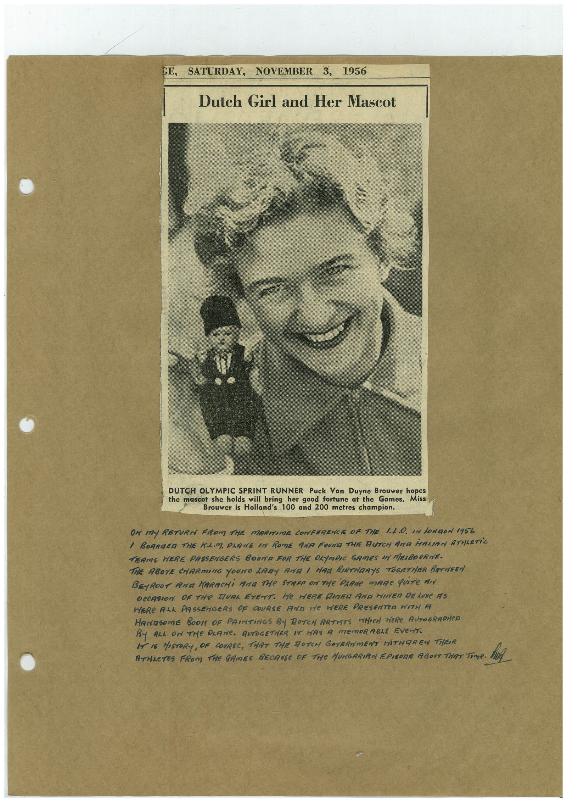

Book 1 · scan 079


Description
Transcription
Context
Review notes
Compare the machine draft with the scan. Handwriting and names need human review.
Artifacts
Edit the artifacts field in this note’s frontmatter to change these records. This summary is generated.
B01-S079-A01 — Newspaper clipping & Handwritten note — Book 1, scan 079
Types: Newspaper clipping, Handwritten note
Scope: Whole scanned page; individual items can be split out during review.
Caption: Not mapped yet.
Caption source: Not recorded yet.
Caption status: unmapped
Machine transcription
GE, SATURDAY, NOVEMBER 3, 1956 Dutch Girl and Her Mascot DUTCH OLYMPIC SPRINT RUNNER Puck Van Duyne Brouwer hopes the mascot she holds will bring her good fortune at the Games. Miss Brouwer is Holland's 100 and 200 metres champion. OR MY RETURN FROM THE MARITIME CONFERENCE OF THE 1.2.0. IN LONDON 1956 / BOARDER THE KAM PRANE IN ROME ANA FOUNT THE BUTCH AND MALIAN ATHLETiC TEAMS HERE PASSENGERS BOUTTA FOR THE OLYMOIC GAMES IN MEABOURNE- THE ABOYE CHARMING YOUNG LARY AND 1 HAG BIRTHRAYS TOGETHER BETWEEN BEyROUT ANa MARACHi ANA THe STAFF ON THe PARMe mARe qUITe AN OCCASION OF THe DUAL EVENT. HE HERE DINED AND HINED DELUXE AS HERE ALL PASSENGERS OF COURSE ANA He HERE PRESENTER WITH A HArasome BOOK OF PRINTINGS BY RUTCH ARTISTS WHICH WeRe AUTOGRAPHeD BY ALL ON THe PLANe. AATOGETHER IT HAS A MEmORABLE EVENT. I IS HISTORY, OF COURSE, THRT THE RUTCH GOYERNMENT HITHOREW THER ATHAETES FROM THe GAMES BECAUSe OF THe HUNGARIAN EPISORE ABOUT THAT Time.